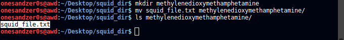
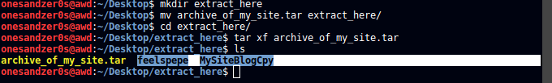
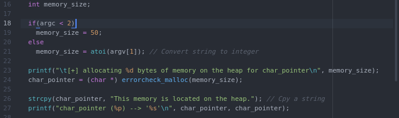

xxd
24-Set-2017
xxd creates a hex dump of a given file or standard input. It can also
convert a hex dump back to its original binary form.
-b for binary digit dump. -ps output in postscript plain hexdump style. -r for reverse. -c display with columns.
Function Pointers
31-Ago-2017
We know that we can send to a function the addresses of variables. However, we can also send to a function the adress of another function, because these are also load to memory. Declaration is as follows:
type (* ptr_to_function) (function parameters)
Learning Bash
Lesson one: Navigation
So let's learn how to navigate on the command line and learn some basic commands.
ls | pwd | cd | mkdir | clear and tput reset
Once you open the terminal, you will see your username followed by the pc name (the one that identifies you on a network etc) and finally ~$
which means the terminal is ready to receive your input and also that you're on your home directory (~).
ls
Let's shine some light into our terminal with ls.
ls will list all the files in a directory, it can do it with many more information but that will come later.
pwd
So now we have directories like the Desktop Pictures etc, but before we jump into one of these folders let's learn about pwd, which basicaly prints the working directory

Now that we know where we are located with a little more detail than just home, let's go to our Desktop. Keep in mind that using the terminal will be much like using windows, except you have much more power with you.
cd
To change directory we just put our cd command followed by the directory we want to go.

Going backwards in directories.

Using just cd will takes us straight to home.
Also, if any errors pop-up, make sure to read them carefully and most importantly stay calm. Bash is not wrong, you are. To minimize typing errors, use Tab for autocompletion. It's very handy.
Ok, now were in our Desktop folder. But if you just installed linux you probably wont have anything there and you can check it with ls.
mkdir
This time to shed some light, we will create a folder with mkdir and the folder name right next to it.
Now let's go into the folder that we just created with cd
To end this lesson, use clear to clear your terminal. However, clear will basically just scroll down, if you really want to clean all of the terminal output use tput reset.
Learning Bash
Lesson two: Dealing with files
touch | vim and nano | cat | cp | mv | rm
Let's start with creating files, text files.
Bash comes with vim and nano pre-installed. nano is better for beginners, vim has the fame of being very dificult to learn, but its probably the most powerful text editor. So, we are going to create a file with touch, edit it with nano and use cat to see the content inside of it.
touch
nano
CTRL-O + ENTER + CTRL-X to write and quit
cat
Now we use cat to see whats inside of the without having to open it.
Now that we created a file, we will now learn how to move it or remove it.
cp
cp is for copying files or directories.

mv
mv is used to move but also to rename files or directories.
I made a new directory and moved our squid_file.txt into it.

Here I renamed the file that we copied into the Desktop directory.
rm
rm removes files or directories.
Removing a file.

Removing a directory. Notice the --recursive, -r option we need to use it when we want to remove a directory.
Archives with tar
Tar stores and extracts files. tar saves many files together into a single tape or disk archive, and can restore individual files from the archive.
Here I join two files, a copy of my site and a meme file, and create an archive with both of them called archive_of_my_site.tar
I then move the .tar file into a new directory and extract it.

tar has many more options, for example you can this options to also compress the file or list the files inside.
Opening pdf files with command line
If you want to open a window with the pdf gnome-open and evince will work for you. But if you want to open the pdf in the command line, you can do so with less. I used head to see the first 10 lines, but with out it the full pdf will be displayed.
Working with Files
All the libraries, a usage function and the function prototypes.
Reserving heap space for the directory and the input and using strcpy() to insert the user input and the file location into that allocated space. Also, a failsafe in case of user attempts buffer overflow.

The opening the writing and the closing of the file.

fatal() for error messages and errorchecked_malloc() to allocate the memory and to return error in case of failure.
Memory
Working with the heap
Here we set a default memory size of 50 if no arguments are passed. Then we allocate the memory size with our errorcheck_malloc(). Since malloc() doesn't know what type of memory it's allocating, we must typecast into the appropriate type. Else, it will return a void pointer. We then copy a string using strcpy() into the allocated memory.

free() is used to free the allocated memory.

Here is our errorchecked_malloc(). It accepts the size in bytes to allocate. If that allocation fails, the error checking code will display and error and exit the program. The error display is done with fprintf(), the first argument is stderr with is a standard filestream meant for displaying errors. Otherwise it will return the pointer to the newly allocated heap memory.

Base64 encoding

Bash script to resize images
So I had to do this script because I needed to resize my Pictures to reduze load times on the Photolio and to save alot of work. I used basename to grab the names of the images and convert to resize them.

Curl
I'm learning about curl. Very powerful tool. I'm also going to talk about split and BeautifulSoup. Let's start with split.
Split
In this example, I start with a simple string, and what split can do to that string is, as the name says, split it. And you can do so simply but using .split() as I did in the beginning. But we can take this one step further. So let's say we want to grab whatever is in front of 'example'. We can do so buy spliting 'example' of the string and picking whats in front of it, hence the [1]. And that would be it. Now let's pick just the word phrase 'phrase'. Like previously, we get whats in front of 'example' but now we split twice. The last split is to remove the '.'
BeautifulSoup
This gets very useful when parsing specific text in a html page as we will see soon. So let's talk about BeautifulSoup. To use this you need to install the bs4 module. For this example i used the main page of Hack Forums and grabed the names of online users.
This code uses bs4 to grab specific tags like tbody and td. Also find_all() allows us to grab tags with a certain class. Bs4 does much, much more. In the end we use text=True to grab our names. We could have used split.
Bs4 docs

Running our code we can see the span tags and the final result the names. All of this output is done by our get_names() function.
Curl
So, what is curl? If we look at our man pages we get a pretty straight answser. Curl is a tool to transfer data from or to a server, using several protocols like HTTP FTP IMAP and many others. Curl offers proxy support, user authentication, SSL connections, cookies etc. Let's write a small script to get timings of connections. For this I'm running apache2 on localhost. Very easy to setup POST SCRIPT
To be updated...